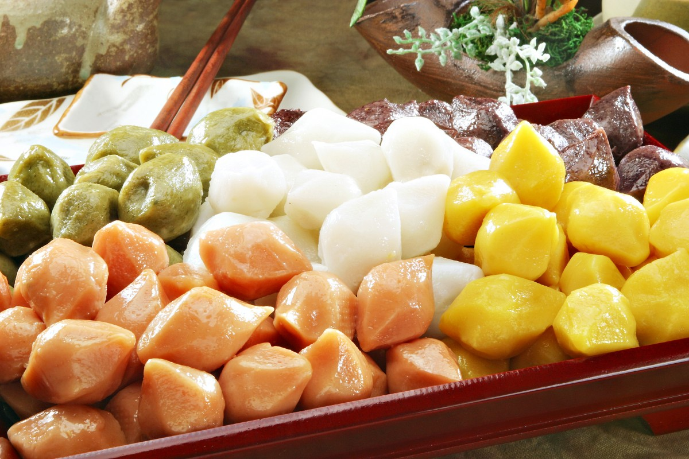

Los Angeles ⇄ Seoul
Now that I've planned my trip and guessed what would catch me off guard. This time I'm going deeper and putting Korean culture side by side with my own life in LA. For each topic, I look at what's different, what's actually pretty similar, and the part I care about most: why the difference exists in the first place.
Honestly, I don't even need a plane ticket for some of this. LA's Koreatown is one of the biggest Korean communities outside of Korea, so a little piece of Seoul has been in my city this whole time.
Food & Dining
When I go out to eat, everyone orders their own plate and starts eating as soon as their food comes. Then there's the tip math at the end: 15–20%.
Everything's shared! Stews, grilled meat, and free refill side dishes (banchan) all go in the middle. You wait for the oldest person to take the first bite, pour drinks for other people instead of yourself, and never stick your chopsticks straight up in your rice. And no tipping!
Why?
It all comes back to Confucian respect for elders: whoever's oldest sets the pace. Eating out of the same pot also builds jeong (정), that bond you get from spending time with people. The chopstick rule is because chopsticks standing in rice look like the offerings made to ancestors at memorial rites, so it's bad luck at a normal dinner. Tipping is just a U.S. thing because servers' pay is built around it, while in Korea service is already in the price.
Communication
People here are pretty direct, and sometimes I even call my professors or bosses by their first names. Asking someone's age right when you meet them would be kind of weird.
Korean has formal and casual speech built right into the grammar, so people often ask your age early to figure out how to talk to you. You're also expected to have nunchi (눈치), basically the skill of reading the room without anyone spelling it out.
Why?
Hundreds of years of Confucian order during the Joseon dynasty made relationships super hierarchical: older/younger, senior/junior. That hierarchy got baked into the language, so asking your age isn't nosy. It's how someone knows whether to say annyeonghaseyo or just annyeong. I've seen it in every K-drama, when characters argue over who's older and gets called "hyung" or "noona." American culture is more about equality and individualism, so we mostly talk to everyone the same way.
Family & Relationships
American culture hypes up independence: moving out, doing your own thing, making your own choices. Family still matters, but growing up usually means moving away from home.
It's normal to live with your parents until you get married. Filial piety (효, hyo), taking care of and honoring your parents, is a huge deal. On holidays, lots of families still hold memorial rites for their ancestors.
Why?
Confucianism puts family at the center of everything, and being a good person means being a good son or daughter. Korea also developed super fast, so a lot of parents sacrificed everything for their kids' futures, and kids feel like they owe it back. The U.S. was built on individual freedom and leaving to start fresh, so moving out is seen as "becoming an adult."
Traditions & Celebrations
The big ones here are Thanksgiving, the Fourth of July, and Christmas. On Valentine's Day, anyone can give anyone a gift. Lunar New Year is huge in LA too, especially in Koreatown and other Asian American neighborhoods.
Seollal (Lunar New Year): bow to your elders (sebae) and eat rice cake soup. Chuseok: the fall harvest festival with songpyeon rice cakes. On Valentine's Day girls give the gifts, guys return the favor on White Day (March 14), and single people eat black-bean noodles together on "Black Day" (April 14), which I think is hilarious.
Why?
Korea's biggest holidays follow the lunar calendar because Korea was a farming society for most of its history, so holidays lined up with planting and harvest. Holidays like White Day and Black Day show how Korea takes something from outside and remixes it into its own thing. That's exactly what K-pop does with Western music, and it's a big part of why I fell for it.
Education & Work
There's no single "right" path here. I went to Glendale Community College before transferring to CSUN, and now I'm finishing my CS degree while working on campus, which is totally normal. People also talk openly about wanting work-life balance.
Students study until late at night at private academies (hagwon) to prepare for one exam, the Suneung, which can decide their college and career. Jobs are all about seniority, with long hours and team dinners (hoesik) after work.
Why?
After the Korean War, Korea didn't have many natural resources, so its people became the resource. Education was the fastest way out of poverty, and the whole country moved at that famous ppalli-ppalli (빨리빨리, "hurry, hurry") speed. That success came with a ton of pressure. It's the side of Korea that shows up in the dramas I watch, and it's why stories about burnout and second chances, like Our Beloved Summer, hit me so hard, especially as a senior about to graduate.
Religion & Beliefs
LA has to be one of the most religiously diverse cities in the world. You'll find churches, temples, mosques, and synagogues all in the same neighborhood.
About half of Koreans don't follow a religion, and most of the rest are Christian or Buddhist. Confucianism is more like a set of social values than a religion, so it shapes manners even for people who aren't religious.
Why?
Korea's beliefs came in layers: shamanism, then Buddhism, then Joseon's Confucianism, then Christianity, which spread fast in the 1900s. Instead of replacing each other, they just stacked on top of each other. That's why a family might go to church on Sunday and still hold an ancestral rite on Chuseok.

What I Learned
Going into this, I mostly thought of cultural differences as fun facts: Koreans bow, Americans tip. Putting them side by side made me realize almost every difference is the answer to a problem a society had to solve. How do you show respect in a strict hierarchy? Build it into the language. How do you rebuild a country with nothing after a war? Education. How do you keep families close? Shared meals and holidays.
Culture isn't a list of rules. It's what people's history taught them works. Something that looks weird from the outside usually makes total sense from the inside.
That idea is a big deal for my last entry. When someone gets judged by a culture they don't understand, little things like how they talk, act, or grieve can be read completely wrong. That's exactly what happened in the Amanda Knox case.
Sources
- Korea.net. "About Korea: Society and Culture." https://www.korea.net/AboutKorea
- Britannica. "South Korea: Cultural life." https://www.britannica.com/place/South-Korea
- Korea Tourism Organization. "Visit Korea: Traditional Holidays." https://english.visitkorea.or.kr